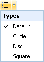

2.3.8.5. Lists
Unordered list
By clicking on this icon, the paragraph at the current cursor position or if text is selected, the paragraphs that contain the selected text, will be rendered as unordered list items (i.e. each item of the list is marked with a bullet, circle or other marker symbol). The marker symbol can be selected from the drop-down list:

Figure 2.3.63. Unordered list drop-down
The spacing of the list items (indent, space before/after) can be defined in the publishing output configuration (see Section 2.6.2.1.1, “General output settings”).
Ordered list
By clicking on this icon, the paragraph at the current cursor position will be rendered as ordered list items, i.e. each item of the list is marked with a number, letter or another sequential symbol. The marker symbol can be selected from the drop-down list:

Figure 2.3.64. Ordered list drop-down
If a text block is selected and the "ordered list" icon is clicked, then the paragraphs that contain the selected text, will be rendered as an ordered list.
The spacing of the list items (indent, space before/after) can be defined in the publishing output configuration (see Section 2.6.2.1.1, “General output settings”).
By default an ordered list starts with the sequential number 1. Nevertheless, if a previous list has to be continued, it may be necessary to start the ordered list with a higher number. This can be achieved as follows:
- Place the cursor at the first list item (for which the list number shall be changed).
- Click on the "Insert/Edit Attributes"
 button (see Edit attributes). This will open the following dialog:
button (see Edit attributes). This will open the following dialog:

Figure 2.3.65. Insert/Edit attributes dialog
- Insert the "Start value" in the "List attributes" section and close the dialog by clicking the "Insert" button.
The list will then be continued with the entered start value. To continue with the default numbering, open the "Insert/Edit Attributes" dialog and delete the list item start value.
The nesting level of a list item can be increased or descreased as follows:
- Place the cursor on the list item.
- Click the "Indent"
 or "Outdent" button to increase or decrease the nesting level.
or "Outdent" button to increase or decrease the nesting level.